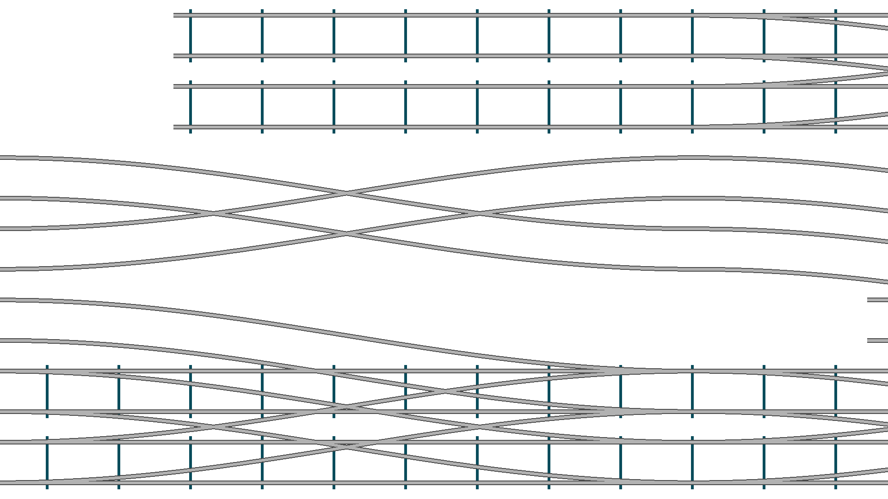

Train Tracks
A generative train track animation program that proceduraly
generates endless branching and merging patterns for a set of train tracks.
This animation could also be used to visualize the behaviour of elementary Cellular Automata.
Snow Flakes
A generative animation meant to capture the feeling of snowflakes falling peacefully on a dark night in winter.